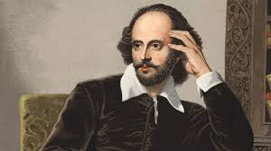
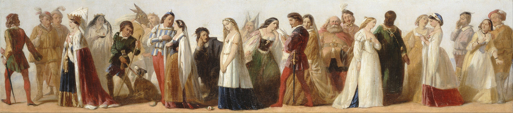

William Sspear
Many people believe William Shakespeare is the best British writer of all time. His many works are about life, love, death, revenge, grief, jealousy, murder, magic and mystery. He wrote the blockbuster plays of his day - some of his most famous are Macbeth, Romeo and Juliet, and Hamlet.
 The life of William Shakespear
Who was William Shakespear?
Be it a school going kid or a college level student or even the ones doing their doctorate – studying the stories, sonnets & plays of Williams Shakespeare occurs at each of these stages, just like Shakespeare’s ‘Seven Ages of Man!’ Well, someone with a stature of Williams Shakespeare deserves their work to be acknowledged for years to follow that too by people of all ages at various levels. The greatness of Williams Shakespeare lays in the fact that his work is reason behind ‘Literature’ being so interesting and appealing for many!
Early life of william Shakespear!!
Shakespeare was the son of John Shakespeare, an alderman and a successful glover (glove-maker) originally from Snitterfield in Warwickshire, and Mary Arden, the daughter of an affluent landowning family.[15] He was born in Stratford-upon-Avon, where he was baptised on 26 April 1564. His date of birth is unknown, but is traditionally observed on 23 April, Saint George's Day.[1] This date, which can be traced to William Oldys and George Steevens, has proved appealing to biographers because Shakespeare died on the same date in 1616.[16][17] He was the third of eight children, and the eldest surviving son.[18]
Although no attendance records for the period survive, most biographers agree that Shakespeare was probably educated at the King's New School in Stratford,[19][20][21] a free school chartered in 1553,[22] about a quarter-mile (400 m) from his home. Grammar schools varied in quality during the Elizabethan era, but grammar school curricula were largely similar: the basic Latin text was standardised by royal decree,[23][24] and the school would have provided an intensive education in grammar based upon Latin classical authors.[25]
At the age of 18, Shakespeare married 26-year-old Anne Hathaway. The consistory court of the Diocese of Worcester issued a marriage licence on 27 November 1582. The next day, two of Hathaway's neighbours posted bonds guaranteeing that no lawful claims impeded the marriage.[26] The ceremony may have been arranged in some haste since the Worcester chancellor allowed the marriage banns to be read once instead of the usual three times,[27][28] and six months after the marriage Anne gave birth to a daughter, Susanna, baptised 26 May 1583.[29] Twins, son Hamnet and daughter Judith, followed almost two years later and were baptised 2 February 1585.[30] Hamnet died of unknown causes at the age of 11 and was buried 11 August 1596.
London and theatrical career...
It is not known definitively when Shakespeare began writing, but contemporary allusions and records of performances show that several of his plays were on the London stage by 1592.[42] By then, he was sufficiently known in London to be attacked in print by the playwright Robert Greene in his Groats-Worth of Wit:
... there is an upstart Crow, beautified with our feathers, that with his Tiger's heart wrapped in a Player's hide, supposes he is as well able to bombast out a blank verse as the best of you: and being an absolute Johannes factotum, is in his own conceit the only Shake-scene in a country.[43]
Scholars differ on the exact meaning of Greene's words,[43][44] but most agree that Greene was accusing Shakespeare of reaching above his rank in trying to match such university-educated writers as Christopher Marlowe, Thomas Nashe, and Greene himself (the so-called "University Wits").[45] The italicised phrase parodying the line "Oh, tiger's heart wrapped in a woman's hide" from Shakespeare's Henry VI, Part 3, along with the pun "Shake-scene", clearly identify Shakespeare as Greene's target. As used here, Johannes Factotum ("Jack of all trades") refers to a second-rate tinkerer with the work of others, rather than the more common "universal genius".[43][46]
Greene's attack is the earliest surviving mention of Shakespeare's work in the theatre. Biographers suggest that his career may have begun any time from the mid-1580s to just before Greene's remarks.[47][48][49] After 1594, Shakespeare's plays were performed only by the Lord Chamberlain's Men, a company owned by a group of players, including Shakespeare, that soon became the leading playing company in London.[50] After the death of Queen Elizabeth in 1603, the company was awarded a royal patent by the new King James I, and changed its name to the King's Men
Plays...
Most playwrights of the period typically collaborated with others at some point, as critics agree Shakespeare did, mostly early and late in his career.[107]
The first recorded works of Shakespeare are Richard III and the three parts of Henry VI, written in the early 1590s during a vogue for historical drama. Shakespeare's plays are difficult to date precisely, however,[108][109] and studies of the texts suggest that Titus Andronicus, The Comedy of Errors, The Taming of the Shrew, and The Two Gentlemen of Verona may also belong to Shakespeare's earliest period.[110][108] His first histories, which draw heavily on the 1587 edition of Raphael Holinshed's Chronicles of England, Scotland, and Ireland,[111] dramatise the destructive results of weak or corrupt rule and have been interpreted as a justification for the origins of the Tudor dynasty.[112] The early plays were influenced by the works of other Elizabethan dramatists, especially Thomas Kyd and Christopher Marlowe, by the traditions of medieval drama, and by the plays of Seneca.[113][114][115] The Comedy of Errors was also based on classical models, but no source for The Taming of the Shrew has been found, though it is related to a separate play of the same name and may have derived from a folk story.[116][117] Like The Two Gentlemen of Verona, in which two friends appear to approve of rape,[118][119][120] the Shrew's story of the taming of a woman's independent spirit by a man sometimes troubles modern critics, directors, and audiences.
Shakespeare's early classical and Italianate comedies, containing tight double plots and precise comic sequences, give way in the mid-1590s to the romantic atmosphere of his most acclaimed comedies.[122] A Midsummer Night's Dream is a witty mixture of romance, fairy magic, and comic lowlife scenes.[123] Shakespeare's next comedy, the equally romantic Merchant of Venice, contains a portrayal of the vengeful Jewish moneylender Shylock, which reflects dominant Elizabethan views but may appear derogatory to modern audiences.[124][125] The wit and wordplay of Much Ado About Nothing,[126] the charming rural setting of As You Like It, and the lively merrymaking of Twelfth Night complete Shakespeare's sequence of great comedies.[127] After the lyrical Richard II, written almost entirely in verse, Shakespeare introduced prose comedy into the histories of the late 1590s, Henry IV, parts 1 and 2, and Henry V. His characters become more complex and tender as he switches deftly between comic and serious scenes, prose and poetry, and achieves the narrative variety of his mature work.[128][129][130] This period begins and ends with two tragedies: Romeo and Juliet, the famous romantic tragedy of sexually charged adolescence, love, and death;[131][132] and Julius Caesar— based on Sir Thomas North's 1579 translation of Plutarch's Parallel Lives—which introduced a new kind of drama.[133][134] According to Shakespearean scholar James Shapiro, in Julius Caesar, "the various strands of politics, character, inwardness, contemporary events, even Shakespeare's own reflections on the act of writing, began to infuse each other".
Classification
Shakespeare's works include the 36 plays printed in the First Folio of 1623, listed according to their folio classification as comedies, histories, and tragedies.[156] Two plays not included in the First Folio,[14] The Two Noble Kinsmen and Pericles, Prince of Tyre, are now accepted as part of the canon, with today's scholars agreeing that Shakespeare made major contributions to the writing of both.[157][158] No Shakespearean poems were included in the First Folio.
In the late 19th century, Edward Dowden classified four of the late comedies as romances, and though many scholars prefer to call them tragicomedies, Dowden's term is often used.[159][160] In 1896, Frederick S. Boas coined the term "problem plays" to describe four plays: All's Well That Ends Well, Measure for Measure, Troilus and Cressida, and Hamlet.[161] "Dramas as singular in theme and temper cannot be strictly called comedies or tragedies", he wrote. "We may, therefore, borrow a convenient phrase from the theatre of today and class them together as Shakespeare's problem plays."[162] The term, much debated and sometimes applied to other plays, remains in use, though Hamlet is definitively classed as a tragedy.
Death..
Shakespeare died on 23 April 1616, at the age of 52.[e] He died within a month of signing his will, a document which he begins by describing himself as being in "perfect health". No extant contemporary source explains how or why he died. Half a century later, John Ward, the vicar of Stratford, wrote in his notebook: "Shakespeare, Drayton, and Ben Jonson had a merry meeting and, it seems, drank too hard, for Shakespeare died of a fever there contracted",[83][84] not an impossible scenario since Shakespeare knew Jonson and Drayton. Of the tributes from fellow authors, one refers to his relatively sudden death: "We wondered, Shakespeare, that thou went'st so soon / From the world's stage to the grave's tiring room.